01
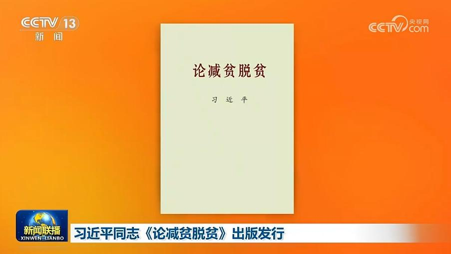
习近平同志《论减贫脱贫》出版发行
中共中央党史和文献研究院编辑的习近平同志《论减贫脱贫》，近日由中央文献出版社出版，在全国发行。
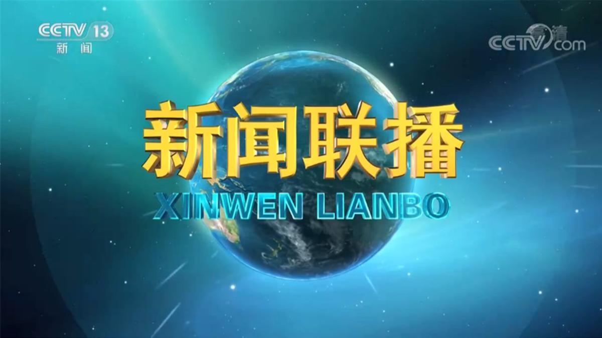

中共中央党史和文献研究院编辑的习近平同志《论减贫脱贫》，近日由中央文献出版社出版，在全国发行。
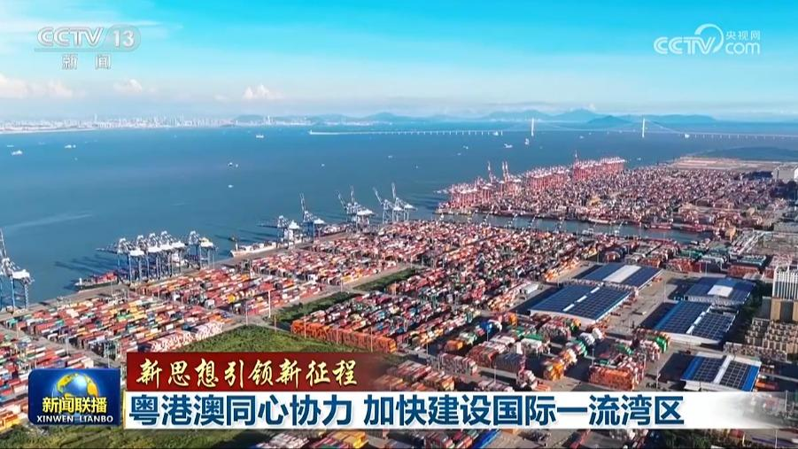
建设粤港澳大湾区是习近平总书记亲自谋划、亲自部署、亲自推动的重大国家战略。总书记强调，要锚定建设富有活力和国际竞争力的一流湾区和世界级城市群的目标，同心协力、稳扎稳打，努力实现重点突破、全面推进。“十五五”开局之年，粤港澳三地以创新为引领，加快促进各类要素集聚，大湾区融合发展不断迈出新步伐。
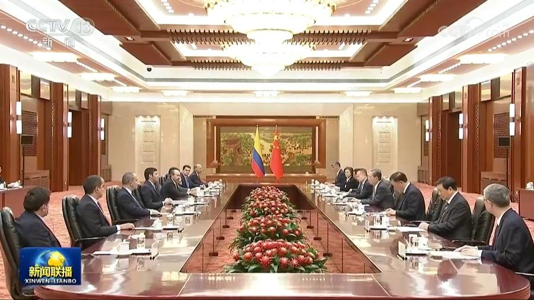
中共中央政治局常委、全国人大常委会委员长赵乐际10日在北京会见由众议长巴吉尔率领的哥伦比亚多党干部考察团。
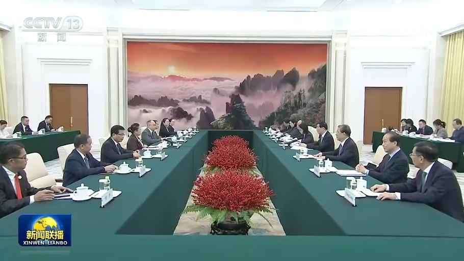
全国政协主席王沪宁10日在京会见老挝建国阵线中央副主席布沙迪。王沪宁表示，今年6月，习近平总书记、国家主席同通伦总书记、国家主席就构建新时代全天候中老命运共同体达成重要共识，为两国关系擘画宏伟蓝图。中方愿同老方遵循两党两国最高领导人战略指引，为推进各自社会主义现代化建设增添新动力。中国全国政协愿与老挝建国阵线深化交流合作，为推动中老命运共同体建设贡献力量。王沪宁还介绍了中共二十届五中全会情况。
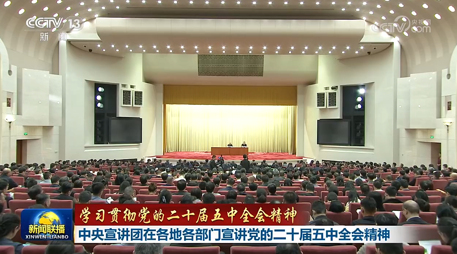
连日来，学习贯彻党的二十届五中全会精神中央宣讲团成员在各地各部门宣讲，并与基层干部群众互动交流，推动全会精神学习走深走实。
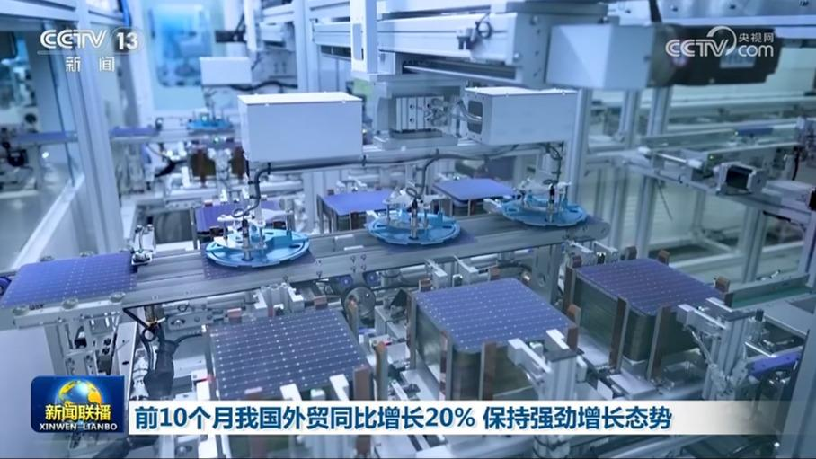
海关总署今天（11月10日）对外公布最新统计数据，今年前10个月，我国货物贸易进出口同比增长20%，保持强劲增长态势。
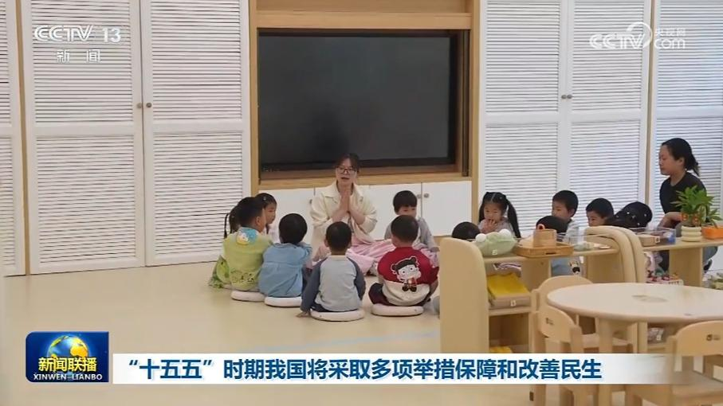
记者从国家发展改革委了解到，“十五五”时期，国家将聚焦人民群众急难愁盼问题，实施更加公平普惠、精准有力的社会政策。
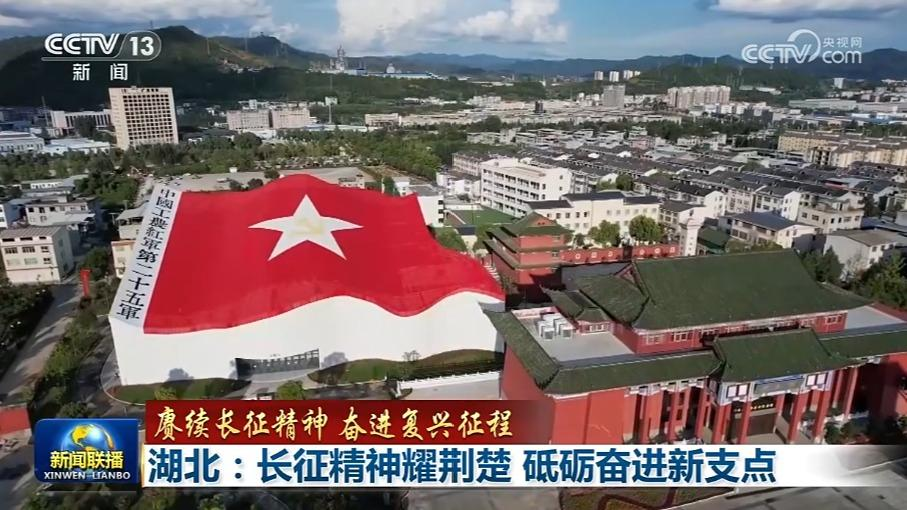
在长征这部波澜壮阔的英雄史诗中，湖北走出的多支红军队伍，为长征胜利立下了不朽功勋。90载薪火相传，荆楚儿女赓续伟大长征精神，鼓足干劲、奋发进取，努力谱写中国式现代化湖北新篇章。
第九届进博会今天（11月10日）在上海闭幕，多项数据创新高。本届进博会正逢APEC“中国年”，不少参展企业结束上海的行程后，还将奔赴深圳参加APEC相关活动。从黄浦江畔到南海之滨，一场开放合作的接力正在进行。
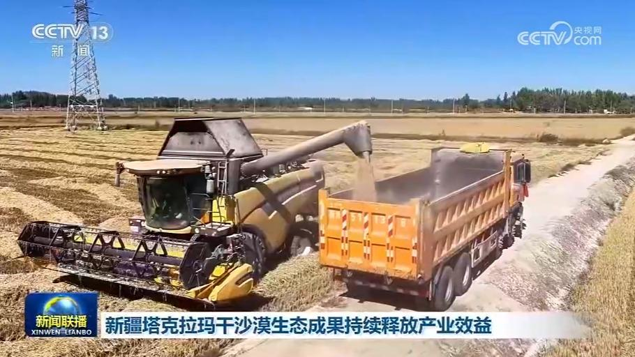
新疆塔克拉玛干沙漠边缘绿色阻沙防护带实现锁边合龙以来，周边地区持续推进扩边增绿，通过“生态产业化、产业生态化”，不断推动生态成果转化为产业效益。
2026年第九期和第十期储蓄国债（电子式）今起发行
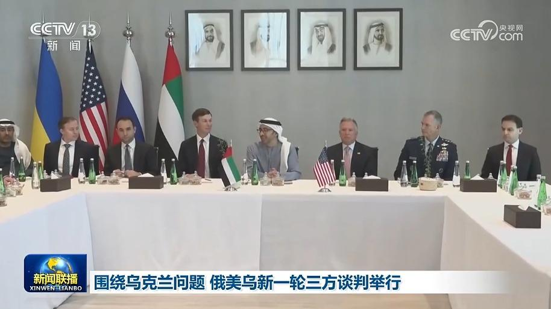
阿联酋阿布扎比当地时间今天（11月10日）中午，北京时间今天下午，围绕乌克兰问题的俄罗斯、乌克兰、美国三方谈判开始举行，俄总统助理梅金斯基、乌对外情报局局长乌梅罗夫和美总统特使威特科夫等人员参加。这是三方时隔9个月重启面对面磋商。
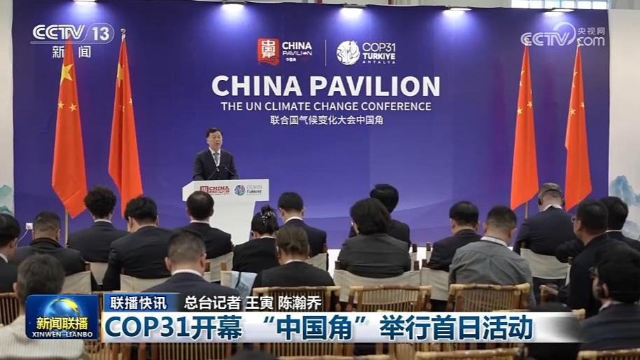
COP31开幕 “中国角”举行首日活动